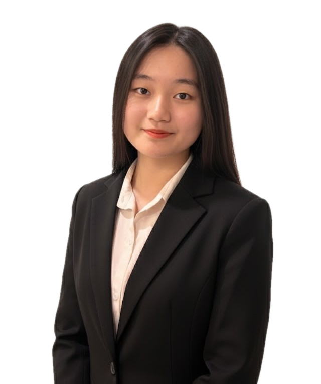

Gracela Triana
CV
ID
EN
↗
Menu
Professional Portfolio
Data Analysis · Business Analysis · Project Management · Supply Chain
Hello, I'm
Gracela

Triana
Explore profile ↓
01
Data Analysis
02
Business Analysis
03
Project Management
04
Supply Chain
SQL
Power BI
Python
Tableau
BPMN
Demand Forecasting
SAP MM
Excel
SQL
Power BI
Python
Tableau
BPMN
Demand Forecasting
SAP MM
Excel
Curriculum vitae
Email · gracela.triana@email.com
↗
LinkedIn · linkedin.com/in/gracelatriana
↗
GitHub · github.com/gracelatriana
↗
CV ·
↗
© 2026 Gracela Triana.